Nguồn logic đã kiểm tra
Remote Config được khai báo qua RemoteConfigService, gọi setDefaultsAsync(R.xml.remote_config_defaults), fetch bằng fetchAndActivate(), sau đó RemoteConfigRepositoryImpl parse và cache các nhóm config.
Các vị trí quảng cáo được gom theo thứ tự: banner_native_ad_places, app_open_ad_places, rewarded_rewardedinter_inter_ad_places. Mỗi nhóm có thể bị override bởi ad_places_version_config hoặc key fallback *_2.
- Danh sách key Firebase
- Schema ad place
- Native ads
- Banner ads
- Interstitial, Rewarded, Rewarded Interstitial
- App open ads
- Config khác
- Native UI gallery
Danh sách key Firebase Remote Config
| Key | Kiểu | Mục đích |
|---|---|---|
application_config | JSON object | Cờ bật/tắt ads toàn app, intro/language/shortcut và dữ liệu onboarding ads. |
prevent_ad_click_config | JSON object | Chặn hiển thị ads khi user click quảng cáo quá nhiều trong một session. |
tutorial_config | JSON object | Bật/tắt nhóm ad trong tutorial flow, gồm high-floor và fallback ad unit. |
ads_disabled_by_country | JSON array string | Danh sách mã quốc gia tắt toàn bộ quảng cáo. |
ad_places_disable_when_detect_test_ad | JSON array string | Danh sách place bị ẩn khi SDK phát hiện test ad. |
is_turn_on_ad_places_disabled_when_detect_test_ad | Boolean | Bật/tắt logic ẩn place khi detect test ad. |
splash_screen_config | JSON object | Điều khiển loại ads trên splash và timeout chờ load. |
banner_native_ad_places | JSON array object | Các vị trí banner/native. |
banner_native_ad_places_2 | JSON array object | Override fallback cho banner/native nếu không có versioned key. |
app_open_ad_places | JSON array object | Các vị trí app open. |
app_open_ad_places_2 | JSON array object | Override fallback cho app open. |
rewarded_rewardedinter_inter_ad_places | JSON array object | Các vị trí interstitial, rewarded, rewarded interstitial và native interstitial. |
rewarded_rewardedinter_inter_ad_places_2 | JSON array object | Override fallback cho fullscreen ads. |
ad_places_version_config | JSON array object | Map versionCode sang key ad places riêng. |
interstitial_ad_config | JSON object | Retry, interval và giới hạn session cho interstitial. |
rewarded_ad_config | JSON object | Retry và wait-to-show cho rewarded video. |
rewarded_interstitial_ad_config | JSON object | Retry và wait-to-show cho rewarded interstitial. Defaults hiện tại chưa khai báo key này, code sẽ dùng default nội bộ. |
app_open_ad_config | JSON object | Interval, retry và mode reopen app. |
native_ad_config | JSON object | Retry, hide-on-error và TTL mặc định cho native. |
banner_ad_config | JSON object | Retry và hide-on-error cho banner. |
request_consent_config | JSON object | UMP consent và debug EEA/test device. |
onboarding_config | JSON object | Version UI onboarding và close/swipe behavior. |
language_activity_config | JSON object | Version UI language và thời gian loading LFO. |
Schema ad place chung
Mỗi object trong các list ad place dùng các field chung sau. Nếu ad_id rỗng, is_enable=false, hoặc ad_type không hợp lệ thì place không được load.
| Field | Kiểu | Áp dụng | Ý nghĩa |
|---|---|---|---|
place_name | String | Tất cả | Tên vị trí. Nên khai báo trong AppAdPlaceName. Riêng native_config lồng trong interstitial có thể dùng remote place name mới. |
ad_id | String | Tất cả | AdMob ad unit id chính, thường là fallback cuối. |
high_floor_ad_ids | Array string | Tất cả | Danh sách ad unit ưu tiên, load trước ad_id theo waterfall. |
ad_type | String | Tất cả | bannernativeinterstitialrewardedrewarded_interstitialapp_open |
is_enable | Boolean | Tất cả | Bật/tắt riêng vị trí quảng cáo. |
is_tracking_click | Boolean | Tất cả | Bật tracking click. |
is_tracking_show | Boolean | Tất cả | Bật tracking show/impression theo flow nội bộ. |
is_auto_load_after_dismiss | Boolean | Fullscreen | Sau khi dismiss, tự load lại ad mới. Default code: true. |
is_ignore_interval | Boolean | Interstitial | Bỏ qua interval khi show interstitial ở place này. |
is_tutorial_flow | Boolean | Tất cả | Place thuộc tutorial flow, chịu ảnh hưởng của tutorial_config. |
Versioned ad places
Nếu cần thay danh sách place theo versionCode, khai báo ad_places_version_config. Với mỗi nhóm, app đọc key versioned trước; nếu list rỗng mới đọc *_2, sau đó fallback về key mặc định.
[
{
"version_codes": [12, 13],
"key": {
"banner_native": "banner_native_ad_places_v12",
"app_open": "app_open_ad_places_v12",
"reward_inter": "rewarded_rewardedinter_inter_ad_places_v12"
}
}
]Native ads
Native có thể nằm trong banner_native_ad_places hoặc trong rewarded_rewardedinter_inter_ad_places khi dùng native interstitial. Field quan trọng nhất là native_template_size.
| Field | Kiểu | Ý nghĩa |
|---|---|---|
native_template_size | String | Template UI. Xem gallery bên dưới. |
background_color | String | Màu nền card/native. Có thể dùng hex hoặc chuỗi gradient theo pattern hiện có. |
background_full_color | String | Màu nền full screen phía sau media/native. |
primary_text_color | String | Màu headline. |
body_text_color | String | Màu body/description. |
background_cta | String | Màu nền nút CTA. Có thể dùng 1 màu hoặc gradient dạng #F59E0B,#EF4444. |
cta_text_color | String | Màu text CTA. |
cta_border_color | String | Màu viền CTA. |
cta_radius_dp | Int | Bo góc CTA theo dp. |
border_color | String | Màu viền card/native. |
background_radius | Int | Bo góc nền/card native. |
media_background_color | String | Màu nền media view. |
background_color_ads_notify_view | String | Màu nền nhãn "Ad". |
text_color_ads_notify_view | String | Màu chữ nhãn "Ad". |
expired_time_second | Int | TTL riêng cho native holder. Nếu thiếu dùng native_ad_config.expired_time_second. |
refresh_time_second | Int | Reload interval cho native; <=0 là không refresh. |
is_enable_fullscreen_immersive | Boolean | Với full native, bật mode immersive/transparent theo logic template. |
count_down_timer | Int | Thời gian countdown cho native interstitial/fullscreen close. |
close_step_count | Int | 1 close một bước; 2 next rồi close, dùng cho native interstitial v3. |
step_1_count_down_timer | Int | Countdown bước đầu khi close_step_count=2. |
step_2_count_down_timer | Int | Countdown bước close khi close_step_count=2. |
hide_text_skip_count_down | Boolean | Ẩn text skip countdown. |
hide_text_count_down | Boolean | Ẩn text countdown. |
hide_progress_count_down | Boolean | Ẩn progress countdown. |
progress_bar_tint | String | Màu progress countdown. |
control_close_position | String | left hoặc right, vị trí nút next/close ở native interstitial v3 và collapsible. |
collapsible_expand_cooldown_second | Int | Thời gian cooldown mở rộng lại của template collapsible. |
Native picture-in-picture config
Native PIP dung native_template_size=native_pip, kich thuoc UI 180dp x 180dp. Khi user dang drag, margin PIP khong gioi han vung keo; margin chi duoc ap dung khi show ban dau hoac khi tha tay de snap/validate lai vi tri.
| Field | Kieu | Y nghia |
|---|---|---|
pip_anchor_mode | String | flexible snap ve canh trai/phai; fixed snap ve goc tren/duoi gan vi tri tha tay. |
pip_margin_dp | Float | Margin start/end/bottom theo dp khi show va khi validate sau khi tha tay. Neu thieu, code default 20. |
pip_top_margin_dp | Float | Margin top theo dp khi show va khi validate sau khi tha tay. Neu thieu, code default 20. |
{
"place_name": "anchored_native_pip_home",
"ad_id": "ca-app-pub-xxxxxxxxxxxxxxxx/yyyyyyyyyy",
"ad_type": "native",
"native_template_size": "native_pip",
"is_enable": true,
"is_tracking_click": true,
"background_color": "#FFFFFF",
"primary_text_color": "#1F2937",
"body_text_color": "#111827",
"cta_text_color": "#FFFFFF",
"background_cta": "#FFC21A,#FF7A00",
"border_color": "#000000",
"expired_time_second": 60,
"count_down_timer": 3,
"pip_anchor_mode": "flexible",
"pip_margin_dp": 20,
"pip_top_margin_dp": 20
}Native global config
{
"is_enable_retry": true,
"max_retry_count": 5,
"is_hide_when_error": true,
"expired_time_second": 60,
"retry_interval_second_list": [1, 2, 3]
}Ví dụ native place
{
"place_name": "anchored_bottom_home",
"ad_id": "ca-app-pub-xxxxxxxxxxxxxxxx/yyyyyyyyyy",
"high_floor_ad_ids": ["ca-app-pub-xxxxxxxxxxxxxxxx/highfloor"],
"ad_type": "native",
"native_template_size": "medium_collapsible_banner",
"is_enable": true,
"is_tracking_click": true,
"background_color": "#FFFFFF",
"primary_text_color": "#1F2937",
"body_text_color": "#6B7280",
"background_cta": "#5E56F5",
"cta_text_color": "#FFFFFF",
"border_color": "#E5E7EB",
"cta_radius_dp": 8,
"control_close_position": "left",
"collapsible_expand_cooldown_second": 10,
"expired_time_second": 60
}Interstitial, Rewarded, Rewarded Interstitial
Các loại fullscreen dùng chung list rewarded_rewardedinter_inter_ad_places. Chọn type bằng ad_type.
| ad_type | Loại ad | Config global |
|---|---|---|
interstitial | Interstitial | interstitial_ad_config |
rewarded | Rewarded video | rewarded_ad_config |
rewarded_interstitial | Rewarded interstitial | rewarded_interstitial_ad_config |
native + full_interstitial_* | Native fake interstitial | native_ad_config + native place fields |
Interstitial place fields
| Field | Kiểu | Ý nghĩa |
|---|---|---|
plus_interval | Int | Cộng thêm vào interstitial_ad_config.time_interval riêng cho place. |
is_ignore_interval | Boolean | Bỏ qua interval khi kiểm tra show. |
is_show_native_after | Boolean | Sau khi interstitial dismiss, show thêm native interstitial từ native_config. |
native_after_load_strategy | String | with_interstitial load native cùng lúc interstitial; on_interstitial_impression load native khi interstitial impression. |
native_config | Object | NativeAdPlace lồng, thường dùng native_template_size=full_interstitial_v3. |
Interstitial global config
{
"is_wait_load_to_show": false,
"ads_per_session": 99,
"time_per_session": 600,
"time_interval": 3,
"time_interval_after_show_open_ad": 3,
"is_enable_retry": true,
"max_retry_count": 5,
"retry_interval_second_list": [1, 2, 3]
}Rewarded global config
{
"is_wait_load_to_show": false,
"is_enable_retry": true,
"max_retry_count": 5,
"max_retry_on_context": 2,
"time_wait_retry_on_context": 5,
"retry_interval_second_list": [1, 2, 3]
}Rewarded interstitial global config
{
"is_wait_load_to_show": false,
"is_enable_retry": true,
"max_retry_count": 5,
"retry_interval_second_list": [1, 2, 3]
}Ví dụ interstitial có native sau dismiss
{
"place_name": "fullscreen_test",
"ad_id": "ca-app-pub-xxxxxxxxxxxxxxxx/inter",
"ad_type": "interstitial",
"is_enable": true,
"is_show_native_after": true,
"native_after_load_strategy": "on_interstitial_impression",
"native_config": {
"place_name": "fullscreen_test_native",
"ad_id": "ca-app-pub-xxxxxxxxxxxxxxxx/native",
"ad_type": "native",
"native_template_size": "full_interstitial_v3",
"is_enable": true,
"background_color": "#CD121212",
"background_full_color": "#FFFFFF",
"primary_text_color": "#1F2937",
"body_text_color": "#6B7280",
"background_cta": "#22C55E",
"control_close_position": "left",
"count_down_timer": 5,
"close_step_count": 2,
"step_1_count_down_timer": 2,
"step_2_count_down_timer": 2
}
}Open app ads
Open app place nằm trong app_open_ad_places, type là app_open. Project đang dùng các place phổ biến: open_app_first_open, open_app, reopen_app.
| Field | Kiểu | Ý nghĩa |
|---|---|---|
limit_show | Int | Giới hạn show của place. Nếu thiếu, code default 10000. |
ad_type | String | Luôn là app_open. |
App open global config
| Field | Ý nghĩa |
|---|---|
time_interval | Khoảng cách tối thiểu giữa app open với interstitial/app open gần nhất. |
reopen_mode | app_open_ad show AdMob AppOpen; custom_activity chạy custom reopen action. |
time_millis_delay_before_show | Delay trước khi show reopen ad sau khi app foreground. |
is_enable_retry, max_retry_count, retry_interval_second_list | Retry load app open. |
{
"time_interval": 3,
"reopen_mode": "app_open_ad",
"time_millis_delay_before_show": 200,
"is_enable_retry": true,
"max_retry_count": 5,
"retry_interval_second_list": [1, 2, 3]
}Config khác
application_config
| Field | Ý nghĩa |
|---|---|
is_hide_navigation_bar | Ẩn navigation bar khi app/dialog fullscreen cần immersive. |
is_enable_ads | Bật/tắt toàn bộ quảng cáo. |
is_preload_banner_native_exit | Preload quảng cáo dùng cho dialog exit. |
is_always_preload_banner_native_ads_when_start | Preload banner/native khi vào app. |
is_hide_native_banner_when_network_error | Ẩn native/banner container khi network error. |
is_always_show_intro_and_language_screen | Luôn show language + onboarding. |
is_always_show_intro_and_language_screen_with_interval | Luôn show language + onboarding theo chu kỳ ngày. |
interval_day_always_show_intro_and_language | Số ngày cho chu kỳ show lại intro/language. |
is_enable_introduction_screen | Bật/tắt onboarding. |
is_enable_change_language_screen | Bật/tắt màn chọn ngôn ngữ. |
is_enable_app_shortcut | Bật shortcut. |
is_enable_app_shortcut_uninstall | Bật shortcut uninstall. |
is_enable_open_app_ads_from_uninstall_shortcut | Cho phép open app ads khi mở từ uninstall shortcut. |
is_enable_open_app_ads_from_shortcut | Cho phép open app ads khi mở từ shortcut thường. |
intro_data, intro_data_v2, intro_data_v3 | Mảng trạng thái từng page onboarding: 0 không ads, 1 native/banner, 2 full native. |
intro_action_show_type | Kiểu show action intro, code default 1. |
splash_screen_config
| Field | Ý nghĩa |
|---|---|
max_time_to_wait_app_open_ad | Thời gian tối đa chờ app open trên splash. |
time_skip_app_open_ad_when_not_available | Thời gian skip khi app open chưa có sẵn. |
ad_type_first_open | interstitial hoặc app_open cho lần mở đầu tiên. |
ad_type | interstitial hoặc app_open từ lần mở thứ hai. |
min_time_wait_progress_before_show_ad | Thời gian progress tối thiểu trước khi show ad. |
is_enable_retry, max_retry_count, retry_fixed_delay | Retry load splash ad. |
is_load_before_eu_consent | Cho phép load trước khi hoàn tất EU consent. |
prevent_ad_click_config
{
"max_ad_click_per_session": 6,
"time_per_session": 120,
"time_disable_ads_when_reached_max_ad_click": 20
}tutorial_config
Áp dụng cho place có is_tutorial_flow=true. enable_ad_1=false loại high_floor_ad_ids; enable_ad_2=false loại ad_id fallback; enable_all_ads=false tắt nhóm tutorial theo mapper config.
{
"enable_all_ads": true,
"enable_ad_1": true,
"enable_ad_2": true
}request_consent_config
{
"is_enable": true,
"debug_is_eea": true,
"debug_list_test_device_hashed_id": [
"460E79ECA70EF328A2F505FFB68470B9"
]
}onboarding_config và language_activity_config
{
"version": 3,
"position_next": "top",
"is_show_close": true,
"is_show_swipe": false,
"delay_show_close_swipe_seconds": 1
}{
"version": 2,
"time_show_loading_lfo": 3
}Native UI gallery
Các ảnh dưới đây được chụp bằng adb shell screencap từ debug preview Activity, sử dụng AdMob test native id ca-app-pub-3940256099942544/2247696110.
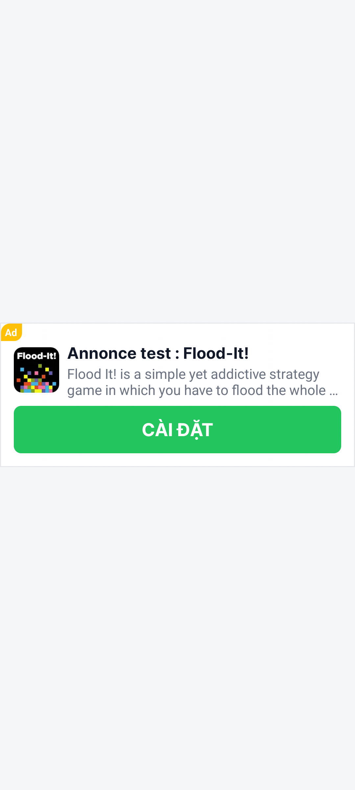
small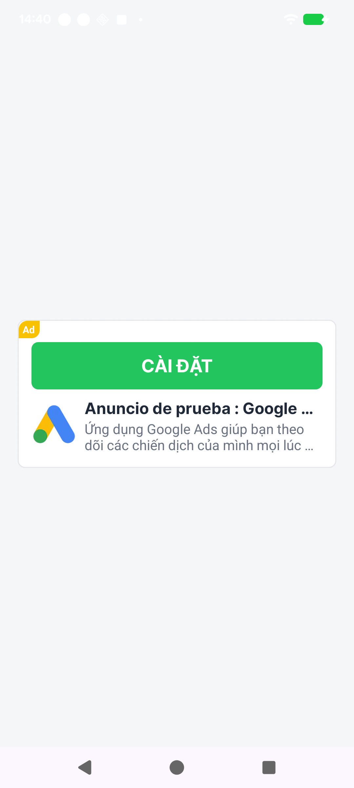
small_cta_top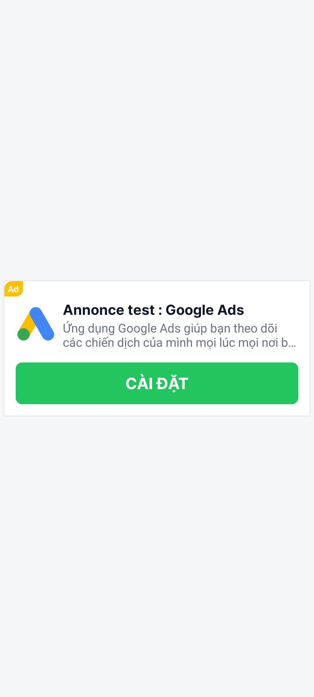
small_cta_bottom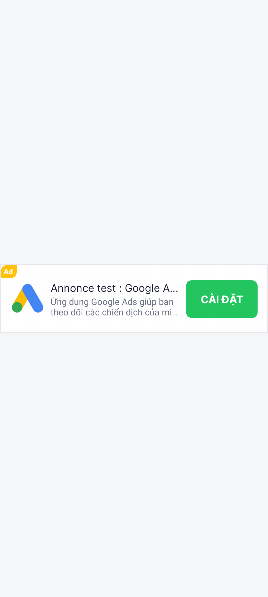
small_cta_right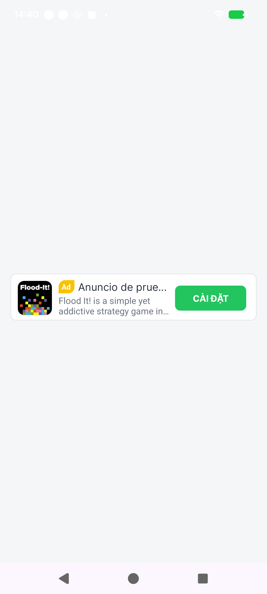
mini_cta_right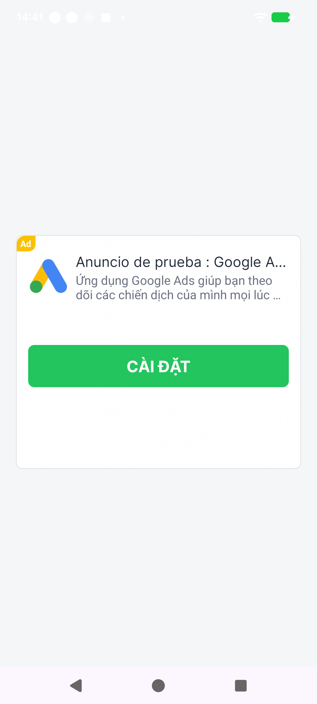
small_longsmall_for_popup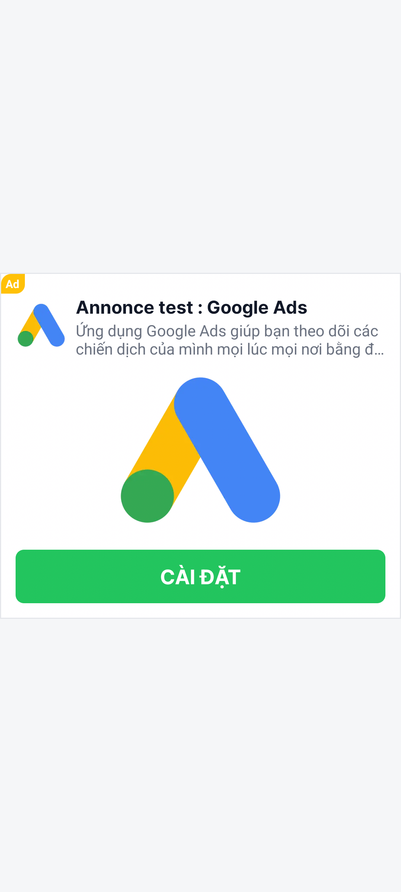
medium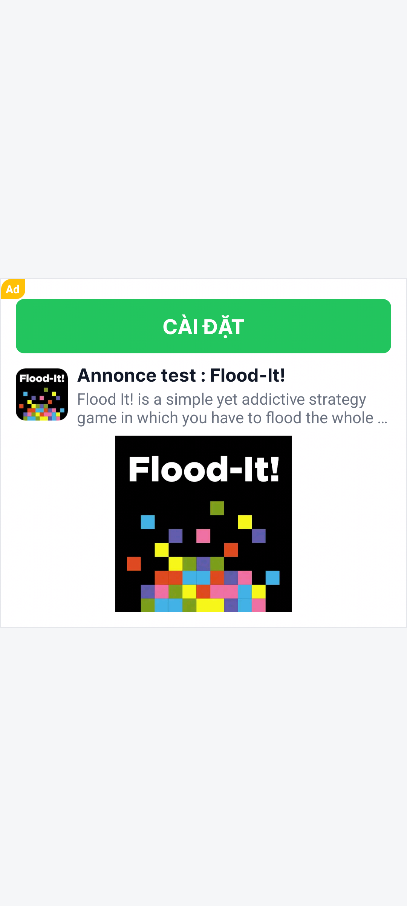
medium_cta_top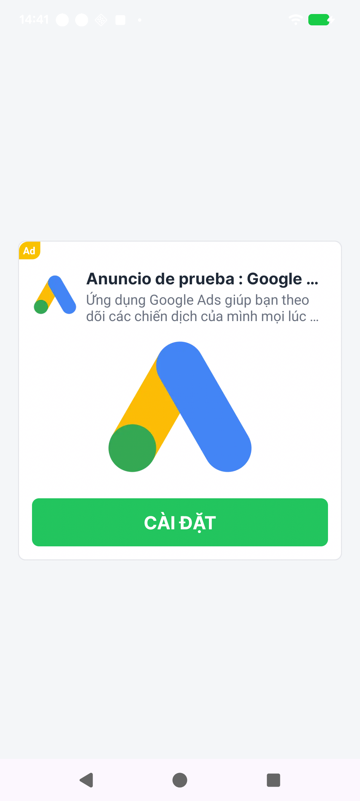
medium_cta_bottom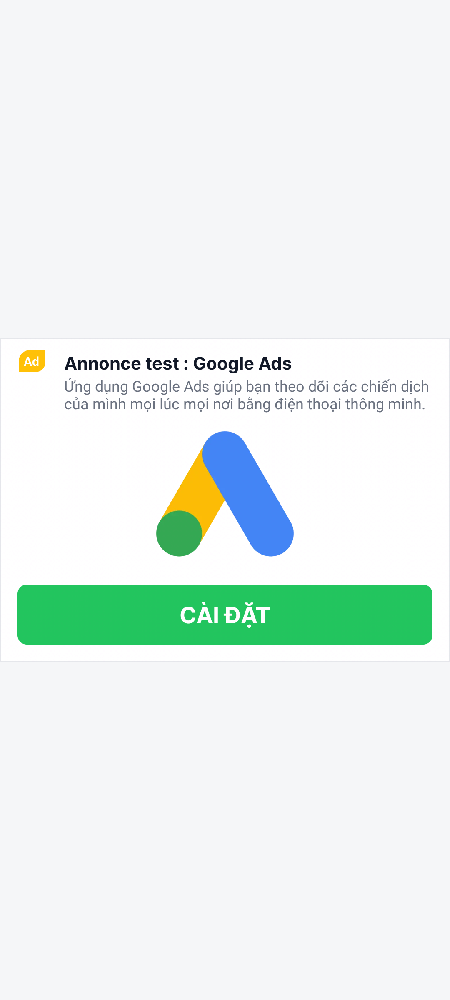
medium_short_cta_bottom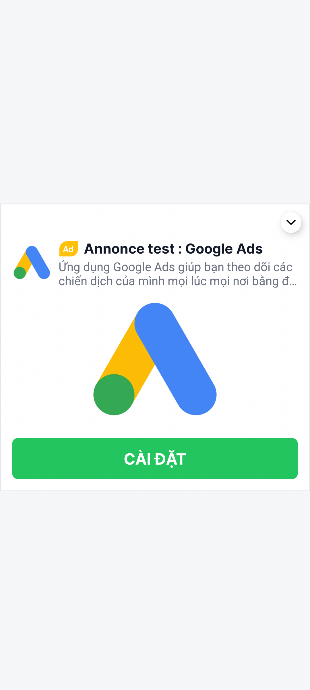
medium_collapsible_cta_bottom
medium_collapsible_banner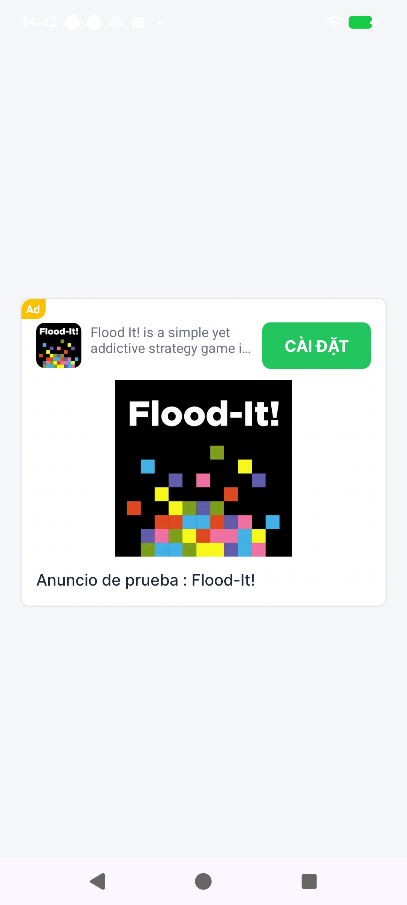
medium_cta_right_top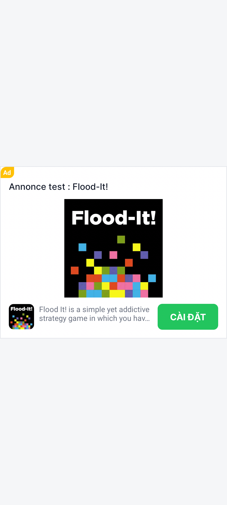
medium_cta_right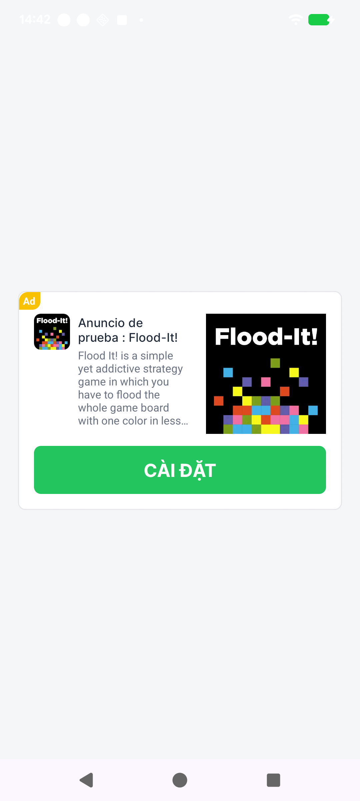
medium_media_right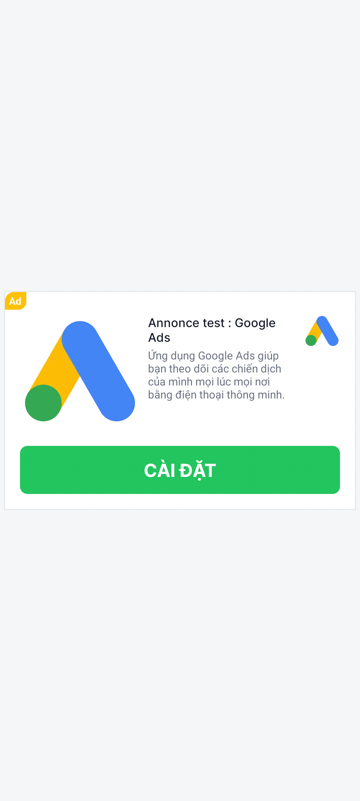
medium_media_left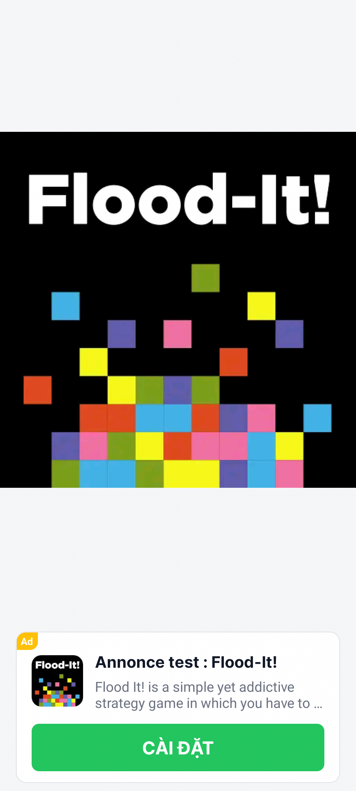
full_cta_bottomfull_cta_bottom_onboarding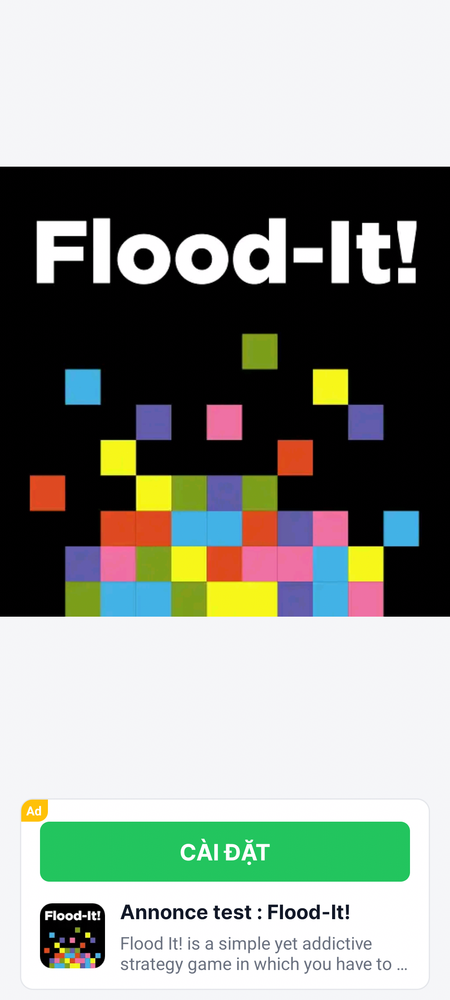
full_cta_top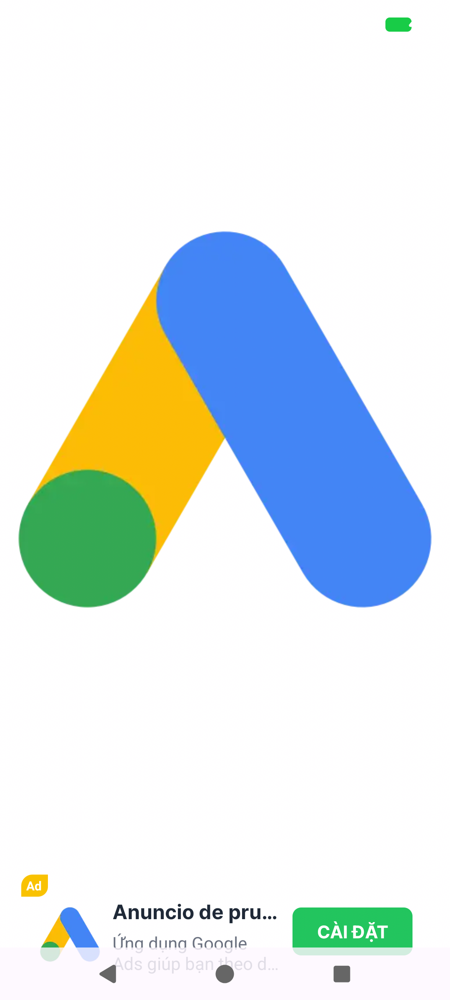
full_cta_rightfull_interstitial_v1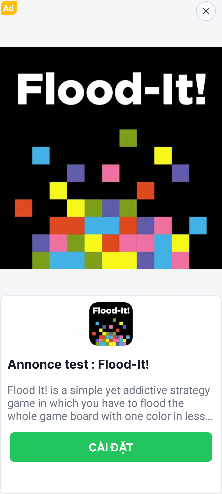
full_interstitial_v2full_interstitial_v3Custom native: key không nằm trong danh sách built-in sẽ thành NativeTemplateSize.CustomKey và được chuyển sang CustomNativeProvider.getInstance().getCustomNativeAds(). Muốn dùng custom key phải implement provider tương ứng; tài liệu này chỉ minh họa các template built-in.